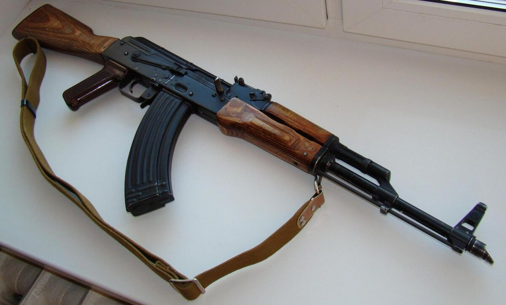
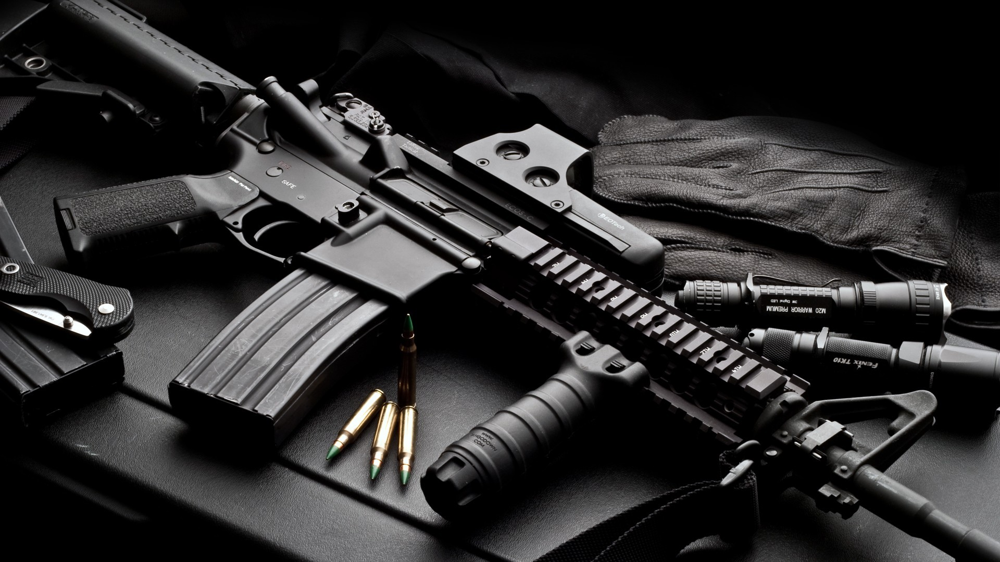

Описание АК (Автомат Калашникова)
Автомат Калашникова, или АК, разработан Михаилом Калашниковым в 1947 году в СССР. АК известен своей надежностью, простотой конструкции и высокой ударной стойкостью. Его широкое использование в различных конфликтах по всему миру сделало его одним из самых известных видов оружия. Он работает на основе газоотводной системы с поворотным затвором и стреляет патронами калибра 7.62 мм.
Описание M16
M16 — это американская штурмовая винтовка, разработанная в 1950-х годах и принятая на вооружение армией США в 1960-х. M16 использует более легкие патроны калибра 5.56 мм и отличается высокой точностью стрельбы на дальние расстояния. Эта винтовка имеет газоотводную автоматику прямого действия, что делает её конструкцию более сложной, но она позволяет вести точный огонь.
Противостояние: АК vs M16

- Высокая надежность в сложных условиях (грязь, песок, вода).
- Простота обслуживания и ремонта.
- Мощные патроны калибра 7.62 мм с хорошей пробивной способностью.
- Низкая стоимость производства.
Достоинства АК
- Высокая точность стрельбы на дальние расстояния.
- Легкость оружия и патронов (5.56 мм), что позволяет носить больше боеприпасов.
- Высокая скорострельность.
- Меньшая отдача, что упрощает контроль при ведении огня.
Достоинства M16
- Низкая точность на больших дистанциях.
- Тяжелый вес и боеприпасы.
- Сильная отдача.
Недостатки АК
- Чувствительность к загрязнениям и перегреву.
- Сложная система обслуживания.
- Меньшая пробивная способность патронов 5.56 мм.